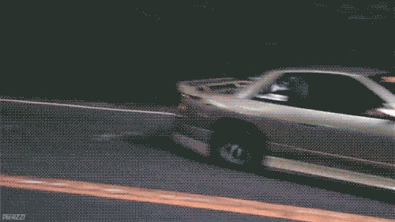

Часто фонк определяется как «музыка поколения Z», первыми этот стиль начали использовать мемфисские артисты DJ Paul, X-Raided, Phonk Beta, Tommy Wright III и коллектив Three 6 Mafia. Первая волна фонка утихла в конце 2000-х, но уже в начале 2010-х стиль пережил возрождение. Слово «фонк» стало популярным благодаря SpaceGhostPurrp, выпустившему треки «Pheel Tha Phonk», «Bringin' Tha Phonk», и «Keep Bringin' Tha Phonk». YouTube-каналы, в особенности Sad Soundcloud, TrillPhonk, также сыграли большую роль в популяризации фонка..
На протяжении нескольких лет фонк перемещался на SoundCloud, оказывая кроме того влияние на творчество таких рэперов, как XXXTentacion, Ski Mask the Slump God, Trippie Redd и других. Фонк является смягчённым вариантом трэпа, отличаясь от него отсутствием «шершавого, тёмного, Мемфис-ориентированного звучания», отдавая большее предпочтение джазу и классическому хип-хопу. В 2016—2018 годах фонк стал одним из наиболее слушаемых жанров на SoundCloud, а хэштег #phonk оказывался среди самых популярных за год.
